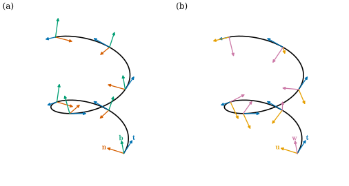
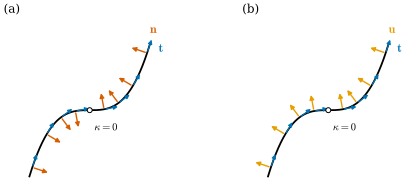

37.3 Space Curves and Adapted Frames
Goals
- space curve의 curvature, torsion, Frenet frame을 상기하고, orthonormal frame의 미분이 antisymmetric matrix로 표현되는 이유를 증명할 수 있다.
- 강의와 노트의 Frenet–Serret 부호를 이 study set의 부호로 옮길 수 있다.
- adapted frame과 Bishop frame을 정의하고, Bishop frame의 존재와 Frenet frame에 대한 회전각 \(-\int\tau\,ds\)를 증명할 수 있다.
- Frenet frame이 정의되지 않거나 뒤집히는 경우를 알고, closed curve의 Bishop frame이 한 바퀴 돌아 생기는 회전(holonomy)을 계산할 수 있다.
Prerequisites
- Section 37.1: differential \(d\gamma\)와 fundamental theorem of plane curves의 복원 절차 (37.1.4).
- curvature Definition 5.1.1, principal normal Definition 5.1.8, binormal Definition 5.2.1, torsion Definition 5.2.5, Frenet–Serret formulas Theorem 5.3.1, fundamental theorem Theorem 5.4.8. 직관은 Section 0.2.
- orthogonal matrix Definition 5.4.1.
Motivation
Section 37.1과 37.2는 plane curve를 다뤘다. 평면에서는 진행 방향의 왼쪽이 정해져 있어 curvature에 부호가 있었고, tangent의 각 하나로 모든 것을 말할 수 있었다. 공간에서는 둘 다 사라진다. “왼쪽”이 없으므로 curvature는 크기 \(\kappa \ge 0\)만 남고, 곡선은 휘는 것(bending)에 더해 비틀릴(twisting) 수 있다. 비틀림을 재는 양이 torsion이다.
이 절은 Chapter 5의 Frenet frame을 상기한 뒤, 그 약점에서 출발한다. Frenet frame은 curvature가 \(0\)인 점에서 정의되지 않고, inflection point에서 뒤집힐 수 있다. 곧고 평평한 구간이 흔한 실제 자료(머리카락, 케이블, 스캔한 곡선)에서는 이것이 심각한 문제다. 해결책은 tangent를 첫 vector로 갖는 frame을 다른 방식으로 고르는 것, 곧 adapted frame이고, 그중 가장 덜 비틀리는 것이 Bishop frame이다. Section 37.5는 이 frame의 discrete 판을 만든다.
Curvature, Torsion, and the Frenet Frame, Recalled
parametrized space curve는 smooth map \(\gamma\colon I \to \R^3\)이다(Definition 4.1.1). differential은 plane curve처럼 \(d\gamma_t(X) = X\gamma'(t)\)이고, 이제 \(3 \times 1\) Jacobian matrix다. 구간 위의 vector field \(X\)를 곡선 위의 vector field \(d\gamma(X)\)로 보내는 이 대응을 pushforward라고도 부른다. 이 절에서는 늘 regular curve를 arc length \(s\)로 parametrization해 쓴다.
정의는 Chapter 5의 것을 그대로 쓴다. unit tangent \(\mathbf{t} = \gamma'\)의 변화율의 크기가 curvature(곡률) \(\kappa = \abs{\mathbf{t}'}\)이다(Definition 5.1.1). \(\kappa \gt 0\)인 곳에서 principal normal \(\mathbf{n} = \mathbf{t}'/\kappa\)와 binormal \(\mathbf{b} = \mathbf{t} \times \mathbf{n}\)이 정의되고, \((\mathbf{t}, \mathbf{n}, \mathbf{b})\)가 Frenet frame(Frenet 틀)이다(Section 5.2). \(\mathbf{b}'\)은 \(\mathbf{n}\)에 평행하고, torsion(비틀림률)은 \(\mathbf{b}' = -\tau\mathbf{n}\)으로 정의한다(Definition 5.2.5, Notation). 그러면 Frenet–Serret formulas(Theorem 5.3.1)
가 성립한다. 직관적으로 \(\kappa\)는 곡선이 osculating plane 안에서 휘는 빠르기이고, \(\abs{\tau}\)는 osculating plane 자체가 \(\mathbf{t}\) 둘레로 도는 빠르기다(Remark 5.2.11).
Example 37.3.1 (the helix, recalled). helix \(\gamma(t) = (a\cos t, a\sin t, bt)\)에서 \(c = \sqrt{a^2 + b^2}\)이라 하면 \(\kappa = a/c^2\), \(\tau = b/c^2\)이고, Frenet frame은 Example 5.3.3에 있다. \(\mathbf{n} = -(\cos(s/c), \sin(s/c), 0)\)은 언제나 helix의 축을 향하고, \(\mathbf{b}\)는 축과 일정한 각을 이루며 축 둘레를 돈다. running example \((a, b) = (1, 0.3)\)에서는 \(c^2 = 1.09\), \(\kappa = 0.91743\), \(\tau = 0.27523\)이다. \(b = 0.3 \gt 0\)인 right-handed helix이므로 \(\tau \gt 0\)이다.
Verification: verify/v-37-3-space-curves-frames.py
(37.3.1)을 증명하는 방법은 여럿이다. Theorem 5.3.1은 성분마다 계산하고, 증명 끝에서 coefficient 행렬이 antisymmetric인 것이 우연이 아님을 짚는다. 여기서는 그 관찰을 orthogonal matrix를 미분하는 명제로 세운다(É. Cartan의 moving frame의 관점). 이 명제는 Frenet frame뿐 아니라 곡선을 따라 움직이는 모든 orthonormal frame에 적용되고, 아래에서 Bishop frame을 만들 때 그대로 쓰인다.
Proposition 37.3.2 (derivative of a moving orthonormal frame). \(F\colon I \to \R^{3\times3}\)가 매끄럽고 모든 \(s\)에서 \(F(s)^{\mathsf T}F(s) = I_3\)이라 하자(곧 \(F(s)\)의 열 \(\mathbf{f}_1, \mathbf{f}_2, \mathbf{f}_3\)이 orthonormal basis). \(A(s) = F(s)^{\mathsf T}F'(s)\)라 하면 \(A\)는 antisymmetric(\(A^{\mathsf T} = -A\))이고
이다.
Proof. \(F^{\mathsf T}F = I_3\)을 미분하면 \((F')^{\mathsf T}F + F^{\mathsf T}F' = 0\), 곧 \(A^{\mathsf T} + A = 0\)이다. \(F\)는 orthogonal이므로 \(F^{\mathsf T} = F^{-1}\)이고, \(F' = F(F^{\mathsf T}F') = FA\)이다. 성분으로는 \(A_{ij} = \inner{\mathbf{f}_i}{\mathbf{f}_j'}\)이고, antisymmetry가 마지막 등식이다.
이 명제가 말하는 것. orthonormal frame은 움직이는 동안 길이와 각을 유지하므로, 그 변화는 순간마다의 회전이다. \(3 \times 3\) antisymmetric matrix에는 독립 성분이 셋 있다(\(A_{21}, A_{31}, A_{32}\)). Frenet frame에서는 \(\mathbf{f}_1 = \mathbf{t}\), \(\mathbf{f}_2 = \mathbf{n}\)이고 \(\mathbf{t}' = \kappa\mathbf{n}\)이 \(\mathbf{b}\) 성분을 갖지 않으므로 \(A_{31} = 0\)이다. 남는 두 성분이 \(A_{21} = \kappa\)와 \(A_{32} = \inner{\mathbf{b}}{\mathbf{n}'} = -\inner{\mathbf{b}'}{\mathbf{n}} = \tau\)이고, 따라서
열을 하나씩 읽으면 (37.3.1)이다. 이 행렬은 Theorem 5.3.1의 (5.3.2)와 같고, Section 0.2에서도 보았다. 곧 Frenet frame이 “특별한” 것은 \(A_{31} = 0\)이 되도록 둘째 vector를 \(\mathbf{t}'\) 방향으로 골랐다는 데 있다. 아래의 Bishop frame은 다른 성분을 \(0\)으로 만든다.
The Fundamental Theorem, Recalled
Theorem 5.4.8은 \(\kappa \gt 0\)과 \(\tau\)를 arc length의 함수로 주면 곡선이 rigid motion(회전과 translation, 반사는 제외)을 제외하고 정해진다고 말한다. plane curve의 복원 (37.1.4)에서는 각 하나를 적분하면 되었지만, 공간에서는 frame 전체를 (37.3.3)으로 적분한 뒤 \(\gamma' = \mathbf{t}\)를 적분해야 한다. 곧 미지수 12개(\(\gamma\)와 세 vector)의 linear ODE system이다. 처음 위치(숫자 셋)와 처음 frame(회전 하나, 숫자 셋)이 rigid motion의 여섯 자유도다.
Example 37.3.3 (the helix from constant curvature and torsion). \(\kappa \equiv 0.91743\), \(\tau \equiv 0.27523\)(running example helix의 값)을 Implementation에 넣고 helix 두 바퀴의 길이 \(L = 4\pi\sqrt{1.09}\)만큼 2000걸음으로 적분하자. 얻은 점들은 방향 \((\tau, 0, \kappa)/\sqrt{\kappa^2 + \tau^2}\)이고 점 \((0, 1, 0)\)을 지나는 직선에서 모두 거리 \(\kappa/(\kappa^2 + \tau^2) = 1\)에 있고(오차 \(10^{-11}\) 미만), 한 바퀴에 그 직선 방향으로 \(2\pi\tau/(\kappa^2 + \tau^2) = 2\pi \cdot 0.3\)만큼 올라간다. 곧 \((a, b) = (1, 0.3)\)인 helix를 회전하고 옮긴 것이다. 이것은 Corollary 5.4.9(상수 curvature와 torsion의 곡선은 helix)를 수치로 본 것이다. 처음 frame이 \((e_1, e_2, e_3)\)이므로 축은 처음 점에서 \(\mathbf{n} = e_2\) 방향으로 \(1\)만큼 떨어져 있고, 축의 방향은 Darboux vector \(\tau\mathbf{t} + \kappa\mathbf{b}\)(Corollary 5.3.2)다.
Verification: verify/v-37-3-space-curves-frames.py
Adapted Frames
Frenet frame에는 약점이 둘 있다. 첫째, \(\kappa = 0\)인 점에서는 \(\mathbf{n} = \mathbf{t}'/\kappa\)가 정의되지 않는다. 곧은 구간이 있으면 그 구간 전체에서 정의되지 않는다. 둘째, \(\kappa\)가 \(0\)을 지나는 곳(inflection)에서 \(\mathbf{n}\)이 갑자기 반대쪽으로 뒤집힐 수 있다(Non-example 5.1.11). 강의도 이 문제에서 adapted frame으로 넘어간다 [CMU-DDG L10]. 또 \(\kappa\)가 \(0\)이 되는 점에서는 curvature와 torsion만으로 곡선을 정할 수도 없다(Non-example 5.4.11).
Definition 37.3.4 (adapted frame). \(\gamma\colon I \to \R^3\)이 arc length로 parametrization된 regular curve이고 \(\mathbf{t} = \gamma'\)이라 하자. smooth map \(\mathbf{u}, \mathbf{w}\colon I \to \R^3\)이 모든 \(s\)에서 \((\mathbf{t}(s), \mathbf{u}(s), \mathbf{w}(s))\)를 positively oriented orthonormal basis로 만들면(곧 \(\mathbf{w} = \mathbf{t} \times \mathbf{u}\)), \((\mathbf{t}, \mathbf{u}, \mathbf{w})\)를 \(\gamma\)를 따른 adapted frame(적응 틀)이라 한다.
곧 adapted frame은 첫 vector를 tangent로 고정하고, 나머지 두 vector를 normal plane \(\mathbf{t}^\perp\) 안에서 매끄럽게 고른 것이다. 둘째 vector \(\mathbf{u}\)를 정하면 셋째는 \(\mathbf{w} = \mathbf{t} \times \mathbf{u}\)로 정해진다. 그래서 adapted frame을 고르는 자유는 점마다 normal plane 안의 회전각 하나다.
Example 37.3.5. (a) \(\kappa \gt 0\)인 구간에서 Frenet frame \((\mathbf{t}, \mathbf{n}, \mathbf{b})\)는 adapted frame이다(Proposition 5.2.2). (b) \(xy\)평면의 곡선 \(\gamma(s) = (x(s), y(s), 0)\)에서 \(\mathbf{t} = (\cos\varphi, \sin\varphi, 0)\)이라 하면 \((\mathbf{t}, J\mathbf{t}, e_3)\)는 adapted frame이다. 여기서 \(J\mathbf{t} = (-\sin\varphi, \cos\varphi, 0)\)이고 \(\mathbf{t} \times J\mathbf{t} = e_3\)이다. 이 frame은 \(\kappa_s\)의 부호와 상관없이 매끄럽다.
Non-example 37.3.6. (a) \((\mathbf{n}, \mathbf{b}, \mathbf{t})\)는 orthonormal frame이지만 첫 vector가 tangent가 아니므로 adapted frame이 아니다. (b) \((\mathbf{t}, \mathbf{b}, \mathbf{n})\)은 첫 vector가 tangent지만 \(\mathbf{t} \times \mathbf{b} = -\mathbf{n}\)이라 negatively oriented이므로 adapted frame이 아니다. (c) plane cubic \(\gamma(t) = (t, t^3, 0)\)의 Frenet frame은 \(t = 0\)을 포함하는 구간에서 adapted frame이 될 수 없다. \(\mathbf{n}\)이 \(t = 0\)에서 연속이 아니기 때문이다(Example 37.3.12).
Proposition 37.3.7 (equations of an adapted frame). \((\mathbf{t}, \mathbf{u}, \mathbf{w})\)가 adapted frame이면 smooth function \(k_1 = \inner{\mathbf{t}'}{\mathbf{u}}\), \(k_2 = \inner{\mathbf{t}'}{\mathbf{w}}\), \(m = \inner{\mathbf{u}'}{\mathbf{w}}\)에 대하여
이고, \(\kappa^2 = k_1^2 + k_2^2\)이다.
Proof. \(F = (\mathbf{t}\ \mathbf{u}\ \mathbf{w})\)에 Proposition 37.3.2를 쓴다. \(A_{11} = \inner{\mathbf{t}}{\mathbf{t}'} = 0\)이고(antisymmetry), \(A_{21} = k_1\), \(A_{31} = k_2\), \(A_{32} = \inner{\mathbf{w}}{\mathbf{u}'} = m\)이며 나머지는 antisymmetry로 정해진다. 열을 읽으면 (37.3.4)이다. \(\mathbf{u}, \mathbf{w}\)가 orthonormal이므로 \(\kappa^2 = \abs{\mathbf{t}'}^2 = k_1^2 + k_2^2\)이다.
\(k_1, k_2\)는 \(\mathbf{t}'\)을 normal plane의 basis \((\mathbf{u}, \mathbf{w})\)로 쓴 성분이고, \(m\)은 \(\mathbf{u}\)가 \(\mathbf{t}\) 둘레로 도는 빠르기, 곧 frame 자신의 “비틀림”이다. Frenet frame은 \(k_2 = 0\)(\(\mathbf{t}'\)이 \(\mathbf{u} = \mathbf{n}\) 방향)이 되게 고른 것이고, 그때 \(k_1 = \kappa\), \(m = \tau\)이다. 반대로 \(m = 0\)이 되게 고를 수도 있다.
The Bishop Frame
Definition 37.3.8 (Bishop frame). \(m \equiv 0\)인 adapted frame, 곧
를 만족하는 adapted frame \((\mathbf{t}, \mathbf{u}, \mathbf{w})\)를 Bishop frame(비숍 틀)이라 한다.
예를 들어 plane curve의 \((\mathbf{t}, J\mathbf{t}, e_3)\)는 Bishop frame이다(Example 37.3.12). 반대로 helix의 Frenet frame은 adapted frame이지만 \(m = \tau = 0.27523 \neq 0\)이므로 Bishop frame이 아니다. \(\mathbf{u}'\)과 \(\mathbf{w}'\)이 \(\mathbf{t}\) 방향뿐이라는 것은 \(\mathbf{u}\)와 \(\mathbf{w}\)가 normal plane 안에서 전혀 돌지 않는다는 뜻이다. normal plane 자체가 \(\mathbf{t}\)를 따라 기울어지므로 \(\mathbf{u}\)도 그만큼은 기울어야 하지만, 그 이상은 움직이지 않는다. Frenet frame은 한 점 근처의 모양만으로 정해지지만, Bishop frame은 한 점에서의 처음 값을 정해야 정해지고, 곡선 위의 다른 점에서의 값은 그 점 근처의 모양만으로는 정해지지 않는다. Bishop은 이 frame을 “relatively parallel” frame이라 불렀다 [Bishop75].
Proposition 37.3.9 (existence and uniqueness). \(\gamma\colon I \to \R^3\)이 arc length로 parametrization된 regular curve이고 \(s_0 \in I\), \(\mathbf{u}_0\)이 \(\mathbf{t}(s_0)\)에 수직인 단위벡터라 하자. 그러면 \(\mathbf{u}(s_0) = \mathbf{u}_0\)인 Bishop frame이 꼭 하나 있다. 두 Bishop frame \((\mathbf{t}, \mathbf{u}, \mathbf{w})\), \((\mathbf{t}, \tilde{\mathbf{u}}, \tilde{\mathbf{w}})\)은 상수 \(\alpha\)에 대하여 \(\tilde{\mathbf{u}} = \cos\alpha\,\mathbf{u} + \sin\alpha\,\mathbf{w}\)로 관계된다.
Proof idea: \(\mathbf{u}' = -\inner{\mathbf{t}'}{\mathbf{u}}\,\mathbf{t}\)는 \(\mathbf{u}\)에 대한 linear ODE다. 풀고 나서, 해가 단위벡터이고 \(\mathbf{t}\)에 수직으로 남는다는 것을 확인한다.
Proof. 존재. linear ODE \(\mathbf{u}' = -\inner{\mathbf{t}'(s)}{\mathbf{u}}\,\mathbf{t}(s)\), \(\mathbf{u}(s_0) = \mathbf{u}_0\)은 coefficient가 매끄러우므로 \(I\) 전체에서 정의된 유일한 smooth solution을 갖는다(ODE의 존재·유일성, 이 study set이 증명 없이 받아들이는 사실). \(f = \inner{\mathbf{u}}{\mathbf{t}}\)라 하면 \(f' = \inner{\mathbf{u}'}{\mathbf{t}} + \inner{\mathbf{u}}{\mathbf{t}'}\) \(= -\inner{\mathbf{t}'}{\mathbf{u}} + \inner{\mathbf{u}}{\mathbf{t}'} = 0\)이므로 \(f \equiv f(s_0) = 0\)이다. \(g = \abs{\mathbf{u}}^2\)이라 하면 \(g' = 2\inner{\mathbf{u}'}{\mathbf{u}} = -2\inner{\mathbf{t}'}{\mathbf{u}}\,f = 0\)이므로 \(g \equiv 1\)이다. \(\mathbf{w} = \mathbf{t} \times \mathbf{u}\)로 두면 \((\mathbf{t}, \mathbf{u}, \mathbf{w})\)는 adapted frame이고 \(m = \inner{\mathbf{u}'}{\mathbf{w}} = -\inner{\mathbf{t}'}{\mathbf{u}}\inner{\mathbf{t}}{\mathbf{w}} = 0\)이다. 유일성. Bishop frame의 \(\mathbf{u}\)는 (37.3.5)에서 \(\mathbf{u}' = -k_1\mathbf{t} = -\inner{\mathbf{t}'}{\mathbf{u}}\mathbf{t}\)를 만족하므로 위의 ODE의 해이고, ODE의 해는 유일하다. 마지막 주장. \(c_1 = \inner{\tilde{\mathbf{u}}}{\mathbf{u}}\), \(c_2 = \inner{\tilde{\mathbf{u}}}{\mathbf{w}}\)라 하자. \(c_1' = \inner{-\tilde k_1\mathbf{t}}{\mathbf{u}} + \inner{\tilde{\mathbf{u}}}{-k_1\mathbf{t}} = 0\)이고 같은 계산으로 \(c_2' = 0\)이므로, 구간 \(I\)에서 \(c_1, c_2\)는 상수다. \(\tilde{\mathbf{u}}\)는 normal plane의 단위벡터이고 \((\mathbf{u}, \mathbf{w})\)는 normal plane의 orthonormal basis이므로 \(\tilde{\mathbf{u}} = c_1\mathbf{u} + c_2\mathbf{w}\), \(c_1^2 + c_2^2 = 1\)이다. \((\cos\alpha, \sin\alpha) = (c_1, c_2)\)인 상수 \(\alpha\)를 잡으면 된다.
곧 Bishop frame은 처음 normal vector 하나를 곡선을 따라 “돌리지 않고” 옮긴 것이다. Euclidean space의 vector를 곡선을 따라 옮기는 것이지만, normal plane 안에 머물러야 한다는 제약이 있어서 \(\mathbf{t}\)가 기울어지는 만큼만 기울어진다. 이런 옮김을 parallel transport(평행이동)의 한 형태로 볼 수 있다. surface 위의 parallel transport는 Chapter 9와 Section 45.3의 주제다. 여기서는 곡선의 normal vector에 대해서만 쓴다.
Proposition 37.3.10 (Bishop frame relative to the Frenet frame). \(\kappa \gt 0\)인 구간에서 smooth function \(\vartheta\)로
로 둔 adapted frame에서 \(m = \vartheta' + \tau\)이다. 따라서 \((\mathbf{t}, \mathbf{u}, \mathbf{w})\)가 Bishop frame일 필요충분조건은 \(\vartheta' = -\tau\), 곧 \(\vartheta(s) = \vartheta(s_0) - \int_{s_0}^{s}\tau\,du\)이고, 이때 \(k_1 = \kappa\cos\vartheta\), \(k_2 = -\kappa\sin\vartheta\)이다.
이 명제가 말하는 것. \(\vartheta\)는 \(\mathbf{n}\)에서 \(\mathbf{u}\)까지 \(\mathbf{t}\) 둘레로 오른손 규칙으로 잰 각이다(\(\mathbf{t} \times \mathbf{n} = \mathbf{b}\)이므로 \(\mathbf{n}\)에서 \(\mathbf{b}\)로 가는 쪽이 양). Bishop frame은 Frenet frame에 대해 단위 길이당 \(-\tau\)씩 돈다. 거꾸로 말하면 Frenet frame은 “돌지 않는” Bishop frame에 대해 \(+\tau\)씩 돈다. torsion은 Frenet frame이 tangent 둘레로 도는 빠르기다.
Proof. (37.3.1)로 \(\mathbf{u}\)를 미분하면
\[ \begin{aligned} \mathbf{u}' &= -\vartheta'\sin\vartheta\,\mathbf{n} + \cos\vartheta\,(-\kappa\mathbf{t} + \tau\mathbf{b})\\ &\quad + \vartheta'\cos\vartheta\,\mathbf{b} + \sin\vartheta\,(-\tau\mathbf{n})\\ &= -\kappa\cos\vartheta\,\mathbf{t} + (\vartheta' + \tau)\bigl(-\sin\vartheta\,\mathbf{n} + \cos\vartheta\,\mathbf{b}\bigr)\\ &= -\kappa\cos\vartheta\,\mathbf{t} + (\vartheta' + \tau)\,\mathbf{w} \end{aligned} \]이므로 \(m = \inner{\mathbf{u}'}{\mathbf{w}} = \vartheta' + \tau\)이다. \(m = 0\)은 \(\vartheta' = -\tau\)와 같다. (37.3.6)을 거꾸로 풀면 \(\mathbf{n} = \cos\vartheta\,\mathbf{u} - \sin\vartheta\,\mathbf{w}\)이므로 \(\mathbf{t}' = \kappa\mathbf{n}\)에서 \(k_1 = \kappa\cos\vartheta\), \(k_2 = -\kappa\sin\vartheta\)이다.
Example 37.3.11 (the Bishop frame of the helix). helix \((a, b) = (1, 0.3)\)에서 \(\tau = 0.27523\)은 상수이므로 \(\mathbf{u}(0) = \mathbf{n}(0)\)인 Bishop frame은 \(\vartheta(s) = -\tau s\)이다. helix 한 바퀴의 길이는 \(2\pi c\)이므로, 한 바퀴 동안 Bishop frame은 Frenet frame에 대해 \(-\tau \cdot 2\pi c = -2\pi b/c = -1.80546\)(약 \(-103.4^\circ\)) 돈다. \((k_1, k_2) = \kappa(\cos\tau s, \sin\tau s)\)는 반지름 \(\kappa\)인 원을 각속도 \(\tau\)로 돈다(Exercise 37.3.3). Figure 37.3.1이 두 frame이다.
Verification: verify/v-37-3-space-curves-frames.py

Figure 37.3.1의 두 패널에서 아래쪽 첫 점부터 위로 따라가 보자. (a)의 주홍 \(\mathbf{n}\)은 모든 점에서 helix의 축을 향하므로, 곡선을 따라가는 사람에게 Frenet frame은 늘 “같은 자세”다. 그 대신 frame은 공간에서 축 둘레를 돈다. (b)의 주황 \(\mathbf{u}\)는 첫 점에서 \(\mathbf{n}\)과 같은 방향에서 출발하지만, 위로 갈수록 축을 향하는 방향에서 점점 벗어난다. \(\mathbf{u}\)는 normal plane 안에서 돌지 않으려 하고, 비틀리는 것은 Frenet frame 쪽이기 때문이다. 3D 그림만으로는 각을 읽기 어려우므로 interactive version으로 돌려 보면 좋다.
Example 37.3.12 (an inflection point). plane cubic \(\gamma(t) = (t, t^3, 0)\)을 space curve로 보자. \(t \neq 0\)에서 \(\mathbf{n} = \sgn(t)(-3t^2, 1, 0)/\sqrt{1 + 9t^4}\)이고(Non-example 5.1.11), \(\mathbf{b} = \mathbf{t} \times \mathbf{n} = \sgn(t)\,e_3\)이다. 곧 Frenet frame은 \(t = 0\)에서 정의되지 않고, 그 양쪽에서 \(\mathbf{n}\)과 \(\mathbf{b}\)가 함께 뒤집힌다. \(t \neq 0\)에서는 \(\tau = 0\)이다. 한편 Example 37.3.5(b)의 \((\mathbf{t}, J\mathbf{t}, e_3)\)는 Bishop frame이다. \(\mathbf{u} = J\mathbf{t}\)에서 \(\mathbf{u}' = J\mathbf{t}' = \kappa_s J\mathbf{n}_s = \kappa_s J^2\mathbf{t} = -\kappa_s\mathbf{t}\)이고 \(\mathbf{w}' = 0\)이기 때문이다. 곧 plane curve의 Bishop frame에서는 \(k_1 = \kappa_s\), \(k_2 = 0\)이다(Exercise 37.3.2). signed curvature가 Bishop frame의 coefficient로 다시 나타난다.

Figure 37.3.2에서 왼쪽 아래 끝부터 오른쪽 위 끝까지 두 패널의 색 화살표를 비교해 보자. (a)의 주홍 화살표는 원점 바로 왼쪽에서 오른쪽 아래를 가리키다가 원점 바로 오른쪽에서 왼쪽 위를 가리킨다. 곡선의 모양은 원점에서 아무 일도 없는 것처럼 매끄러운데 frame만 뒤집힌다. (b)의 주황 화살표는 같은 곳에서 거의 같은 방향을 유지한다. 곧은 구간이 있는 곡선에서도 마찬가지다. Frenet frame은 그 구간에서 아예 정의되지 않지만, Bishop frame은 그 구간에서 단순히 변하지 않는다(\(\mathbf{t}' = 0\)이면 \(\mathbf{u}' = 0\)).
Closed curves and holonomy
closed curve를 따라 Bishop frame을 한 바퀴 옮기면 어떻게 되는가? \(\mathbf{t}\)는 제자리로 돌아오지만 \(\mathbf{u}\)는 그렇지 않을 수 있다.
Proposition 37.3.13 (total twist of a closed curve). \(\gamma\)가 주기 \(L\)인 closed curve(arc length parametrization)이고 모든 점에서 \(\kappa \gt 0\)이라 하자. \(\mathbf{u}\)를 \([0, L]\)에서의 Bishop frame의 둘째 vector라 하면 \(\mathbf{t}(L) = \mathbf{t}(0)\)이고, \(\mathbf{u}(L)\)은 \(\mathbf{u}(0)\)을 \(\mathbf{t}(0)\) 둘레로 오른손 규칙의 각
만큼 돌린 것이다. 이 각은 \(\mathbf{u}(0)\)의 선택에 무관하다.
Proof. \(\kappa \gt 0\)이므로 Frenet frame은 주기 \(L\)인 smooth frame이다. Proposition 37.3.10에서 \(\mathbf{u}(s) = \cos\vartheta(s)\,\mathbf{n}(s) + \sin\vartheta(s)\,\mathbf{b}(s)\), \(\vartheta(L) = \vartheta(0) - \int_0^L\tau\)이다. \(\mathbf{n}(L) = \mathbf{n}(0)\), \(\mathbf{b}(L) = \mathbf{b}(0)\)이므로 \(\mathbf{u}(L)\)은 \(\mathbf{u}(0)\)을 \(\mathbf{t}(0)\) 둘레로 \(\vartheta(L) - \vartheta(0)\)만큼 돌린 것이다. 이 값은 \(\vartheta(0)\)에 무관하다.
\(\Delta\)를 Bishop frame의 holonomy(홀로노미)라 하고, \(\int\tau\,ds\)를 곡선의 total twist라 부르기도 한다. plane curve에서는 \(\tau \equiv 0\)이므로 holonomy가 \(0\)이다. \(\kappa\)가 \(0\)이 되는 점이 있어도 Bishop frame과 holonomy는 정의된다. 다만 (37.3.7)의 적분은 그 점에서 의미를 잃는다. 평면에 놓이지 않은 closed curve에서는 holonomy가 일반적으로 \(0\)이 아니다. 아래 예는 trefoil knot이지만, holonomy는 knot의 종류가 아니라 곡선의 구체적인 모양으로 정해지고 곡선을 연속적으로 변형하면 연속적으로 변한다.
Example 37.3.14 (a trefoil). torus knot \(\gamma(t) = \bigl((2 + \cos 3t)\cos 2t,\) \((2 + \cos 3t)\sin 2t,\ \sin 3t\bigr)\)(trefoil, \(0 \le t \le 2\pi\))는 \(\kappa \ge 0.385 \gt 0\)이고, 길이는 \(31.899\), total torsion은 \(\int\tau\,ds = -15.593\)이다. 따라서 Bishop frame의 holonomy는 \(\Delta \equiv 15.593 \equiv 3.0270 \pmod{2\pi}\)이다. Section 37.5에서 이 곡선을 sampling한 다각형으로 같은 값을 다시 계산한다.
Verification: verify/v-37-3-space-curves-frames.py
Summary
- orthonormal frame \(F\)의 미분은 \(F' = FA\), \(A\)는 antisymmetric이다 (37.3.2). Frenet frame에서는 \(A_{31} = 0\)이고 남는 두 성분이 \(\kappa\)와 \(\tau\)다 (37.3.3).
- 강의와 노트는 \(T' = -\kappa N\), \(B' = \tau N\)을 쓰므로 torsion의 부호가 이 study set과 반대이고, curvature의 부호는 \(N\)의 선택에 따라 다르다. 이 study set은 \(\mathbf{b}' = -\tau\mathbf{n}\)(오른손 helix에서 \(\tau \gt 0\))이다.
- adapted frame은 tangent를 첫 vector로 갖는 orthonormal frame이고, \(\mathbf{t}' = k_1\mathbf{u} + k_2\mathbf{w}\), \(\kappa^2 = k_1^2 + k_2^2\)이다. Bishop frame은 비틀림 \(m\)이 \(0\)인 것으로, 처음 값을 정하면 유일하고 곧은 구간과 inflection에서도 정의된다.
- Bishop frame은 Frenet frame에 대해 \(-\int\tau\,ds\)만큼 돈다. closed curve에서 한 바퀴의 회전(holonomy)은 \(-\int\tau\,ds \pmod{2\pi}\)이다.
다음 절에서는 discrete curve로 돌아간다. 다각형의 edge vector를 smooth curve의 \(d\gamma\)를 적분한 것으로 읽고, edge length와 turning angle이 plane polygon을 rigid motion을 제외하고 정확히 결정한다는 discrete fundamental theorem, 그리고 discrete turning number를 증명한다.
Exercises
Exercise 37.3.1 ★ 강의 슬라이드의 helix 예에서 \((a, b) = (0.6, 0.8)\)이면 슬라이드의 값은 \(\kappa = -0.6\), \(\tau = -0.8\)이다(\(N\)은 축에서 멀어지는 쪽). 이 study set의 \(\kappa, \tau\)는 무엇인가? 이 helix는 right-handed인가?
Solution
\(a^2 + b^2 = 1\)이므로 \(c = 1\)이고, Example 37.3.1에서 \(\kappa = a/c^2 = 0.6\), \(\tau = b/c^2 = 0.8\)이다. Conventions 상자의 표대로 슬라이드의 \(\tau\)는 부호만 반대이고, 슬라이드의 \(\kappa = -0.6\)은 \(N = -\mathbf{n}\)으로 \(T' = \kappa N\)을 읽은 값이다. \(b = 0.8 \gt 0\)이므로 right-handed이고, 이 study set에서 \(\tau \gt 0\)이다.
Exercise 37.3.2 ★ \(xy\)평면의 곡선 \(\gamma(s) = (x(s), y(s), 0)\)(arc length)에서 \((\mathbf{t}, J\mathbf{t}, e_3)\)가 Bishop frame이고 \(k_1 = \kappa_s\), \(k_2 = 0\)임을 보여라. 처음 값이 \(\mathbf{u}(0) = e_3\)인 Bishop frame은 무엇인가?
Solution
Example 37.3.5(b)에서 adapted frame이다. \(\mathbf{t}' = \kappa_s J\mathbf{t}\)(Notation)이므로 \(k_1 = \inner{\mathbf{t}'}{J\mathbf{t}} = \kappa_s\), \(k_2 = \inner{\mathbf{t}'}{e_3} = 0\)이다. \((J\mathbf{t})' = J\mathbf{t}' = \kappa_s J^2\mathbf{t} = -\kappa_s\mathbf{t}\)이므로 \(m = \inner{(J\mathbf{t})'}{e_3} = 0\)이고 Bishop frame이다. \(\mathbf{u}(0) = e_3\)이면 Proposition 37.3.9에서 상수 \(\alpha = \pi/2\)만큼 돌린 것, 곧 \(\mathbf{u} = e_3\), \(\mathbf{w} = \mathbf{t} \times e_3 = -J\mathbf{t}\)이다. 실제로 \(\mathbf{u}' = 0 = -k_1\mathbf{t}\)이고 이때 \(k_1 = \inner{\mathbf{t}'}{e_3} = 0\), \(k_2 = \inner{\mathbf{t}'}{-J\mathbf{t}} = -\kappa_s\)이다.
Exercise 37.3.3 ★★ helix \((a, b)\)의 Bishop frame에서 \(\vartheta(s) = -\tau s\)일 때 \((k_1(s), k_2(s))\)가 평면에서 반지름 \(\kappa\)인 원을 반시계 방향으로 각속도 \(\tau\)로 돈다는 것을 보여라. 일반적인 곡선에서 \((k_1, k_2)\)를 polar coordinates로 쓰면 반지름과 각은 무엇인가?
Solution
Proposition 37.3.10에서 \((k_1, k_2) = \kappa(\cos\vartheta, -\sin\vartheta)\) \(= \kappa(\cos\tau s, \sin\tau s)\)이다. \(\kappa\)와 \(\tau\)가 상수이므로 반지름 \(\kappa\)인 원 위를 각 \(\tau s\)로, 곧 각속도 \(\tau\)로 돈다(\(\tau \gt 0\)이면 반시계). 일반적으로 \(\kappa \gt 0\)인 곳에서 \((k_1, k_2)\)의 polar coordinates는 반지름 \(\kappa\), 각 \(-\vartheta(s) = -\vartheta(s_0) + \int_{s_0}^{s}\tau\)이다. 곧 반지름이 curvature, 각의 변화율이 torsion이다. 이 곡선을 Bishop은 normal development라 불렀다.
Exercise 37.3.4 ★★ \((\mathbf{t}, \mathbf{u}, \mathbf{w})\)가 비틀림 \(m\)인 adapted frame이고 \((\mathbf{t}, \bar{\mathbf{u}}, \bar{\mathbf{w}})\)가 Bishop frame이라 하자. 연속함수 \(\zeta\)로 \(\mathbf{u} = \cos\zeta\,\bar{\mathbf{u}} + \sin\zeta\,\bar{\mathbf{w}}\)라 쓰면 \(\zeta' = m\)임을 보여라. Proposition 37.3.10은 이것의 특수한 경우임을 설명하여라.
Solution
\(\mathbf{w} = \mathbf{t} \times \mathbf{u} = -\sin\zeta\,\bar{\mathbf{u}} + \cos\zeta\,\bar{\mathbf{w}}\)이다(\(\mathbf{t} \times \bar{\mathbf{u}} = \bar{\mathbf{w}}\), \(\mathbf{t} \times \bar{\mathbf{w}} = -\bar{\mathbf{u}}\)). (37.3.5)의 \(\bar{\mathbf{u}}' = -\bar k_1\mathbf{t}\), \(\bar{\mathbf{w}}' = -\bar k_2\mathbf{t}\)를 쓰면 \(\mathbf{u}' = \zeta'(-\sin\zeta\,\bar{\mathbf{u}} + \cos\zeta\,\bar{\mathbf{w}})\) \(- (\cos\zeta\,\bar k_1 + \sin\zeta\,\bar k_2)\mathbf{t}\) \(= \zeta'\mathbf{w} + (\cdots)\mathbf{t}\)이므로 \(m = \inner{\mathbf{u}'}{\mathbf{w}} = \zeta'\)이다(\(\zeta\)가 미분가능한 것은 \(\cos\zeta = \inner{\mathbf{u}}{\bar{\mathbf{u}}}\), \(\sin\zeta = \inner{\mathbf{u}}{\bar{\mathbf{w}}}\)가 매끄럽고 Lemma 4.4.8처럼 각을 매끄럽게 잡을 수 있기 때문이다). Frenet frame(\(\mathbf{u} = \mathbf{n}\))에서는 \(m = \tau\)이므로 \(\zeta' = \tau\), 곧 Frenet frame은 Bishop frame에 대해 \(+\tau\)로 돌고, Bishop frame은 Frenet frame에 대해 \(-\tau\)로 돈다. 이것이 Proposition 37.3.10의 \(\vartheta' = -\tau\)다(\(\vartheta = -\zeta\) + 상수).
Exercise 37.3.5 ★ Coding. helix \((a, b) = (1, 0.3)\)의 arc length parametrization에서 Bishop ODE \(\mathbf{u}' = -\inner{\mathbf{t}'}{\mathbf{u}}\,\mathbf{t}\)를 \(\mathbf{u}(0) = \mathbf{n}(0)\)에서 출발해 한 바퀴(\(L = 2\pi c\)) RK4로 적분하여라. 끝에서 \(\mathbf{n}(L)\)에서 \(\mathbf{u}(L)\)로의 각(\(\mathbf{t}\) 둘레, \(\mathbf{n} \to \mathbf{b}\)가 양)을 출력하고 \(-\tau L\)과 비교하여라.
Solution
import numpy as np
a, b = 1.0, 0.3
c = np.hypot(a, b)
t_of = lambda s: np.array([-a / c * np.sin(s / c), a / c * np.cos(s / c), b / c]) # unit tangent
dt_of = lambda s: -a / c**2 * np.array([np.cos(s / c), np.sin(s / c), 0.0]) # t' = kappa n
rhs = lambda s, u: -np.dot(dt_of(s), u) * t_of(s) # Bishop equation
L, m = 2 * np.pi * c, 2000
h, u = L / m, -np.array([1.0, 0.0, 0.0]) # u(0) = n(0)
for j in range(m):
s = j * h
k1 = rhs(s, u)
k2 = rhs(s + h / 2, u + h / 2 * k1)
k3 = rhs(s + h / 2, u + h / 2 * k2)
k4 = rhs(s + h, u + h * k3)
u = u + h / 6 * (k1 + 2 * k2 + 2 * k3 + k4)
n_L = -np.array([np.cos(L / c), np.sin(L / c), 0.0])
b_L = np.array([b / c * np.sin(L / c), -b / c * np.cos(L / c), a / c])
print(f"angle from n to u after one turn: {np.arctan2(np.dot(u, b_L), np.dot(u, n_L)):.5f}")
print(f"-tau L = {-b / c**2 * L:.5f}; |u| = 1: {abs(np.linalg.norm(u) - 1) < 1e-10}")출력은 다음과 같다.
angle from n to u after one turn: -1.80546
-tau L = -1.80546; |u| = 1: True한 바퀴 뒤 \(\mathbf{n}\)은 처음과 같은 방향으로 돌아오지만(helix를 따라 한 바퀴 돌면 축을 향하는 방향이 같다), \(\mathbf{u}\)는 \(\mathbf{n}\)에서 \(-1.80546 = -\tau L = -2\pi b/c\)만큼 돌아가 있다(Example 37.3.11). ODE를 수치로 풀었지만 \(\abs{\mathbf{u}}\)는 \(10^{-10}\) 안에서 \(1\)로 남는다. Section 37.5의 discrete Bishop frame은 회전을 곱하므로 이 확인조차 필요 없다.